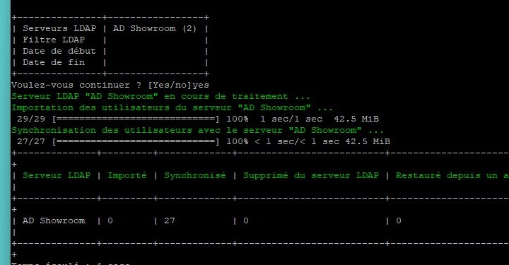

🛠️ Atelier pro SISR
🏢🔐
Sept. – oct. 2026
OpenShowroom — Active Directory, GLPI 11 & LDAP
Déploiement complet d'un domaine Active Directory, d'un GLPI 11 sur Debian relié à l'annuaire en LDAP, des habilitations, de l'inventaire automatique avec GLPI Agent et de la gestion des tickets. Chaque panne a été diagnostiquée, chaque fonction testée et documentée.
- 3 machines virtuelles
- 16/16 tests validés
- 6 incidents résolus
- 3 documents livrés